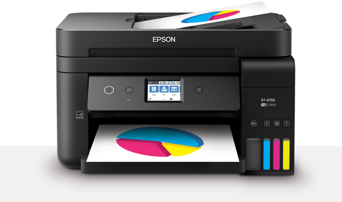

<!--
  Question 6
  Use css and images/bg_cmy.png to recreate the layout shown in images/finished.png.
 -->

<style>
  section {
    background-color: #f2f2f2;

    /* Your css here  */
  }

</style>

<section>
  
</section>